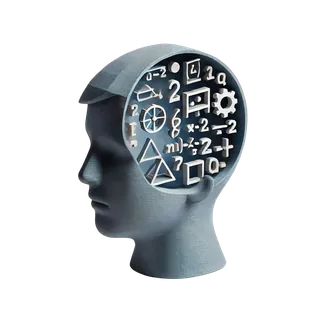
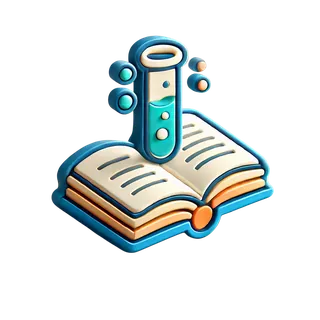
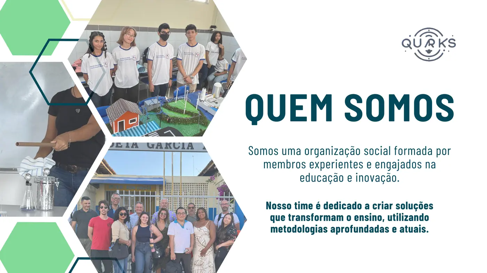
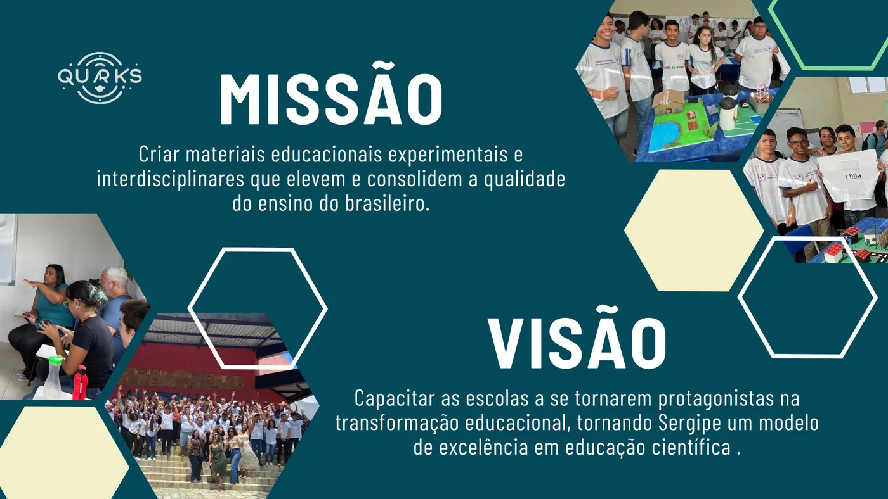
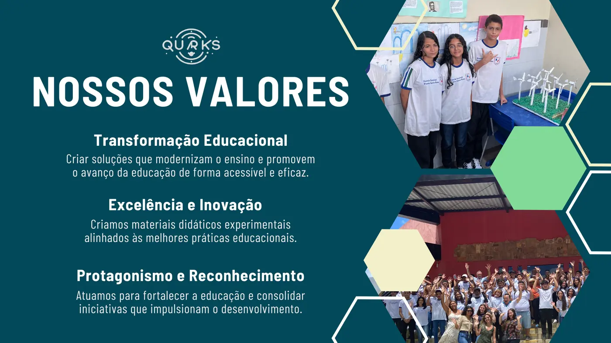
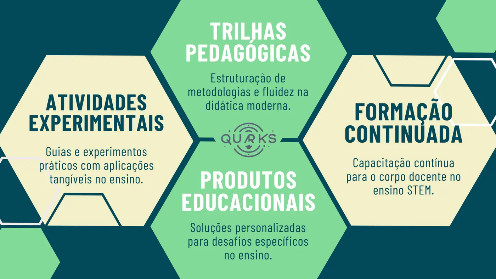
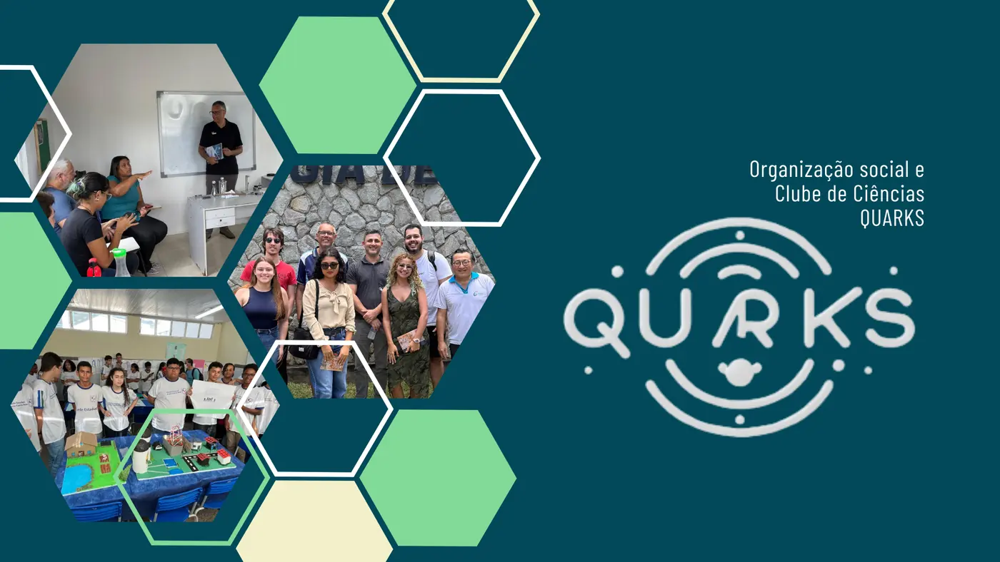

Missão
Transformar a educação de Sergipe através do ensino experimental, tornando a ciência tangível e acessível para incentivar o fortalecimento da tecnologia nacional.
Clube de Ciências Quarks · Aracaju, Sergipe
Organização social que transforma a sala de aula em laboratório vivo: ciência mão na massa, formação de professores da rede pública, kits didáticos de baixo custo, publicações e inovação feita em Sergipe.
01 — Ponto de partida
O Índice de Desenvolvimento da Educação Básica (IDEB), pontuado de zero a dez, mede a qualidade do ensino fundamental e médio nos estados do Brasil com base em dois fatores: desempenho dos alunos em avaliações nacionais e taxa de aprovação escolar.

Os dados mais recentes (2023) revelam que Sergipe ainda está um pouco abaixo da média nacional nas três etapas.
Fonte: IDEB 2023 · INEP
02 — A virada
Embora o método “mão na massa” seja amplamente reconhecido, sua implementação enfrenta barreiras. Mesmo em escolas que possuem recursos para aulas experimentais de qualidade, a falta de atividades experimentais adequadas pode comprometer sua aplicação como recurso pedagógico.
Validado pela ciência
Alguns estudos científicos — clique para ler
Arraste o seletor para transformar a sala de aula, aspecto por aspecto.


Aulas expositivas e exercícios repetitivos
Atividades práticas, experimentação e resolução de problemas reais
Participação passiva: o aluno é receptor de informações
Participação ativa: o aluno é protagonista do processo de aprendizagem
Ênfase em habilidades cognitivas básicas, como memorização
Desenvolvimento de habilidades científicas, como investigação e pensamento crítico
Pode ser desmotivador devido à falta de conexão com a realidade do aluno
Aumenta a motivação ao relacionar o aprendizado com situações do cotidiano
Pouca ênfase no desenvolvimento do pensamento crítico e analítico
Estimula o pensamento crítico e a capacidade de análise através da investigação
Conhecimento teórico que pode ser desconectado da prática
Conhecimento aplicado, facilitando a compreensão e a retenção de informações
Foco em provas e testes tradicionais
Avaliação contínua baseada em projetos, apresentações e relatórios de pesquisa
Pouca ênfase no desenvolvimento de competências transversais
Desenvolvimento de competências como trabalho em equipe, comunicação e resolução de problemas
Abordagem uniforme que pode não atender às necessidades individuais
Flexibilidade para atender às diferentes necessidades e estilos de aprendizagem
Ensino segmentado, com pouca integração entre disciplinas
Integração interdisciplinar, promovendo uma visão holística do conhecimento
03 — Nossa proposta
Sabemos que a limitação de recursos tem sido um grande obstáculo para a educação, e, infelizmente, não há uma perspectiva de mudanças significativas no curto prazo. Por isso, propomos uma solução acessível e eficaz: a implementação de oficinas experimentais de baixo custo, totalmente alinhadas às exigências da BNCC.
Educação de qualidade não precisa ser cara. Acreditamos que é possível oferecer ensino de excelência sem sobrecarregar o orçamento. Chega de investir em equipamentos caros que são usados uma única vez! Queremos mudar isso com soluções práticas e sustentáveis.
Nosso objetivo é fornecer ferramentas experimentais simples e acessíveis, acompanhadas de materiais instrucionais completos, com oficinas e atividades práticas que atendam aos requisitos da BNCC, capacitando educadores do Ensino Fundamental e Médio. Ferramentas acessíveis e reutilizáveis permitem diversas atividades ao longo do ano e ajudam a desenvolver as habilidades dos estudantes sergipanos de maneira constante e eficaz.
04 — Atuação
05 — Portfólio
Cada projeto é um capítulo com experiência própria. Passe o cursor para pré-visualizar e clique para entrar.
06 — Parceiros
Cada parceiro é um átomo dessa rede cristalina. Passe o cursor para energizar as ligações e clique na logo para conhecer a parceria.
07 — Sobre o Quarks
O Clube de Ciências Quarks é uma Organização Social dedicada a revolucionar o ensino básico em Sergipe por meio da inovação em STEAM (Ciência, Tecnologia, Engenharia, Artes e Matemática). Formada por uma equipe multidisciplinar de pesquisadores, doutores e jovens cientistas, combinamos rigor técnico e criatividade para transformar a sala de aula em um verdadeiro laboratório vivo, onde a educação científica se torna acessível, tangível e inspiradora.
Superamos o tradicionalismo expositivo aplicando a metodologia “mão na massa”. Desenvolvemos kits experimentais de baixo custo, softwares e materiais didáticos alinhados à BNCC e aos Objetivos de Desenvolvimento Sustentável (ODS). Nossa atuação vai além da teoria: levamos a cultura maker para disciplinas como Física, Química e Biologia, promovendo capacitações continuadas que fortalecem a autonomia pedagógica dos educadores.
Um dos nossos principais diferenciais é o compromisso com o legado. Diferente de consultorias tradicionais, transferimos a propriedade intelectual e a tecnologia desenvolvida para a própria escola. Isso garante sustentabilidade financeira e assegura que o aprendizado empírico se consolide como uma prática cotidiana, e não apenas uma exceção.
Nosso objetivo é transformar Sergipe no maior centro de formação de mentes tecnológicas do Nordeste. Através de parcerias estratégicas e projetos estruturantes, conectamos o conhecimento acadêmico de ponta ao chão da escola, pavimentando o caminho para que os jovens sergipanos sejam protagonistas do futuro e a ciência atue como motor real de desenvolvimento social.

Transformar a educação de Sergipe através do ensino experimental, tornando a ciência tangível e acessível para incentivar o fortalecimento da tecnologia nacional.
Ser a referência em educação STEAM no Nordeste, convertendo escolas em polos tecnológicos onde jovens são protagonistas do futuro.





Pesquisadores, professores e jovens cientistas.
08 — Transparência
Documentos institucionais, assembleias, finanças e relatórios de projetos, sempre acessíveis.
09 — Participe
Preencha o formulário para que nossa equipe analise uma oportunidade. Buscamos pesquisadores, educadores e estudantes apaixonados por ciência.
10 — Contato
Escolas, gestores, empresas e pesquisadores: conte o que você precisa. Respondemos pelo WhatsApp ou e-mail.